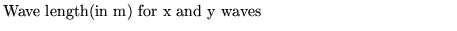
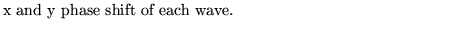
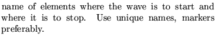

Next: Set fit points
Up: Use and description of
Previous: Show values of constants
This operation sets transverse misalignements according to sinewaves of some chosen
frequency and amplitude as a function of the longitudinal coordinate.
The vertical oscillation may be different from the horizontal
oscillation
This operation only affects the tracking of particles and all
operations that use tracking.
Input format
SEISmic simulation............(up to 80 characters)
xlambs axseis phixs
ylambs ayseis phiys
beginname endname
Parameter definitions
xlambs,ylambs 
axseis,ayseis
phixs,phiys 
beginname,endname 
Dobrin Kaltchev
2004-10-20